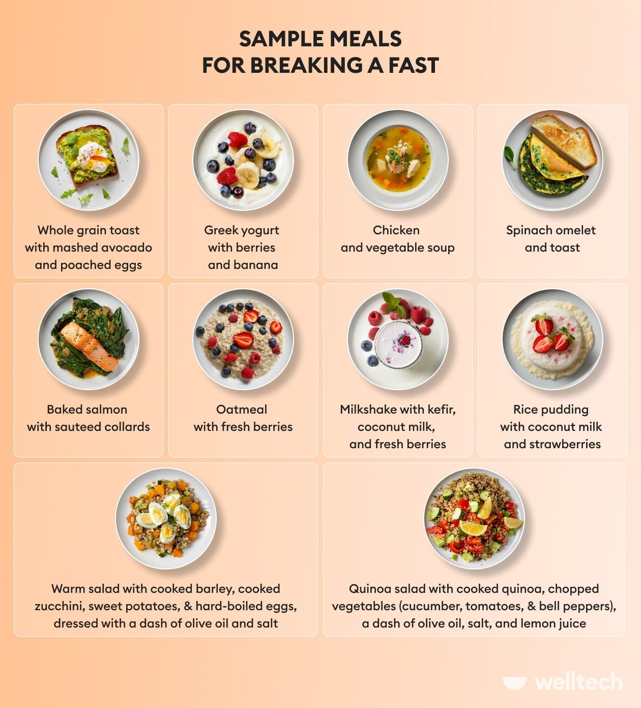
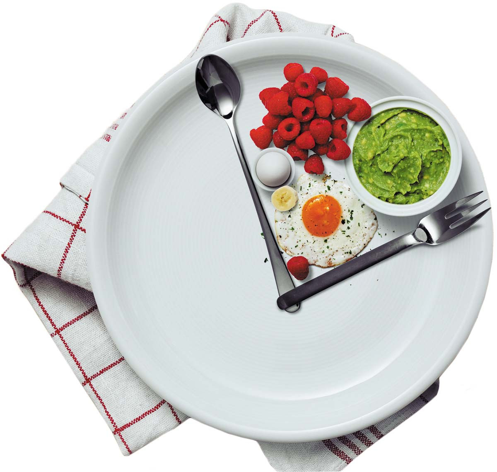
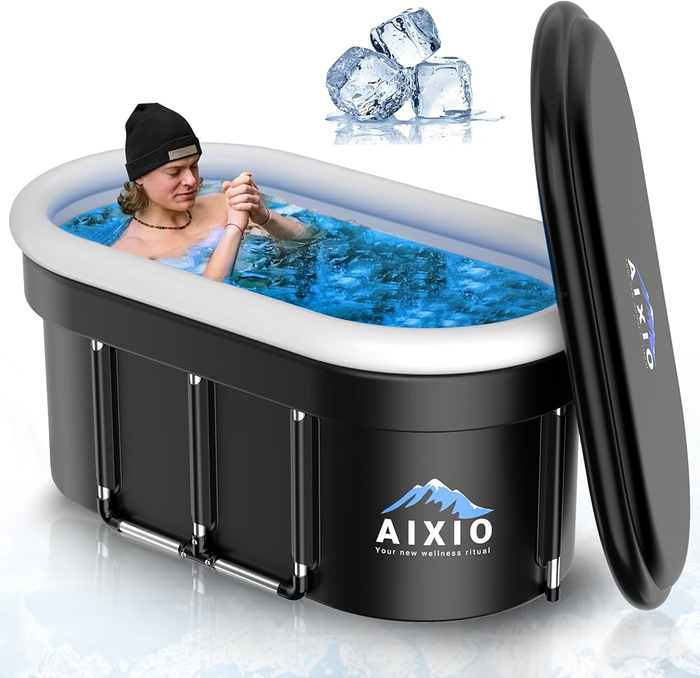

I'm Sarah, a designer from Austin who turned my intermittent fasting experiments into data art. 6 free tools to plan eating windows, analyze metabolism, and track fasting-trend-charts — no guesswork, just numbers.
🚀 Start Tracking Free →Everything I wish I had when I started my fasting journey in 2023. Each tool solves a specific problem I ran into.
Real experiments, real data, real mistakes. Follow along as I figure this out.



Most people fail at fasting not because they can't do it, but because they don't know if they're actually doing it.
I thought I was "pretty consistent" until I saw the numbers. I was only hitting my target 60% of the time. Brutal.
Your data stays in your browser. No accounts, no servers, no tracking. I literally cannot access your fasting logs.
16:8 vs 18:6? Carbs vs protein to break a fast? The only way to know is to track and compare.
The stuff I wondered about when I started — and what I learned through trial and error.
IF isn't a diet — it's an eating schedule. Instead of telling you what to eat, it tells you when to eat. The most popular format is 16:8.
Not for everyone. Talk to a doctor first if you're pregnant, have diabetes, take medications that require food, or have any serious medical condition.
Black coffee, plain tea, and water are generally fine. The debate starts when you add milk, cream, or sugar. I use a splash of oat milk and still see results.
Mental clarity improved within a week for me. Weight changes took 3-4 weeks. Track for at least 30 days before judging. More FAQ →